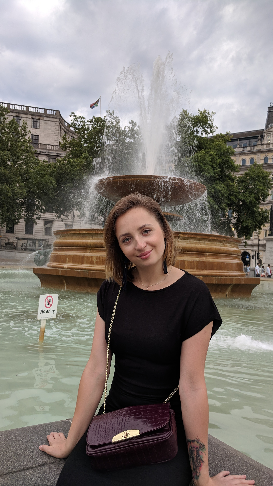
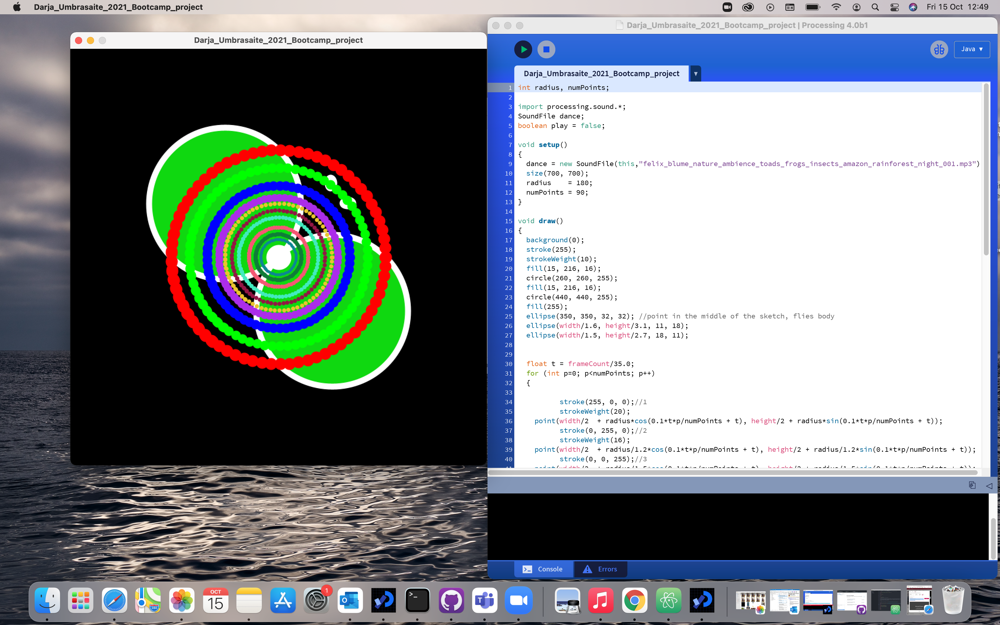

Darja UmbrasaiteI have done some programming in Python programming language during my Foundation year upon starting studies at City, University of London, which helps me to go through a new language skill learning programming in Java. |
 | |
|
|
||
Bootcamp 2021: Fly of the futureIn my project and I am using booleans and different shapes of circles and ellipses to display and draw my fly. I am also using loops and points to make them move around in the cercling way with RGB colour options. Finaly I have edited some sound to the background to create more of imaginative scene which can be controlled by pausing the sound or conntinuing playing it. Check out the code on Github: https://github.com/2021D/bootcamp_project_2021 | ||
|  | ||